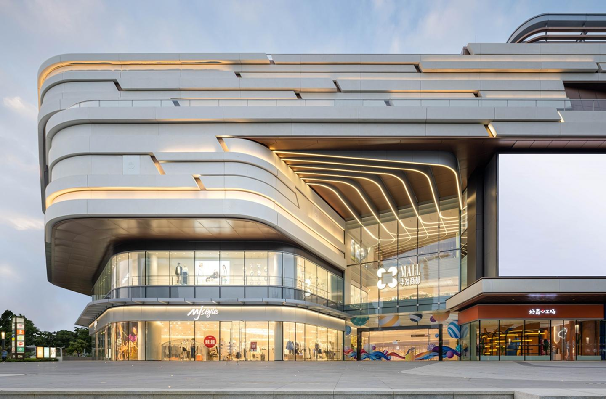

Who We Are
More Than a Mall. A Living Destination.
FontDale is a premium lifestyle mall thoughtfully developed to redefine what a retail destination can and should be. Spanning the iconic Arcadia Circle, FontDale connects its signature North Gallery and South Pavilion through the breathtaking Lumen Skywalk, a luminous glass-and-steel passage that has become an architectural landmark in its own right.
At FontDale, we believe that the act of shopping, dining, or simply spending time in a beautiful space should be an experience that lingers long after you have left. Every detail from the marble underfoot to the ambient light above has been deliberated upon with care and intention.
Our tenants are not merely retailers. They are curators, craftspeople, and storytellers who share our conviction that everyday life deserves to be elevated.

Milestones
The FontDale Journey
From a concept drawn on paper to a destination that draws thousands. This is how FontDale came to be.
The Vision is Born
Founder Franz Diego, inspired by a visit to Milan's Galleria Vittorio Emanuele II, begins conceptualizing a mall that transcends commercial retail. Early sketches envision a skywalk connecting two distinct wings. The seed of what would become the Lumen Skywalk is planted. Architectural partners and the first brand partners are approached.
Construction and Curation
Ground is broken at Arcadia Circle. The North Gallery and South Pavilion foundations are laid while the design team works in parallel to refine the Lumen Skywalk's signature glass-vaulted architecture. Concurrently, Franz Diego personally leads the tenant curation process, negotiating partnerships with global fashion houses and celebrated dining concepts.
FontDale Opens Its Doors
FontDale officially opens to the public, welcoming its first guests on a clear spring morning in March 2025. The opening week features a curated program of events including a ribbon-cutting ceremony attended by civic leaders, an exclusive preview gala for invited guests, and a public opening celebration that draws over 12,000 visitors in its first weekend.
Recognition and Acclaim
Within months of opening, FontDale is recognized by the Regional Retail Design Institute as the year's most outstanding new retail development. The Lumen Skywalk wins an award for architectural innovation, and The Gilded Table secures its first international culinary accolade, validating the vision Franz Diego set out to achieve just two years prior.
Our Uniqueness
What Makes FontDale Different
The Lumen Skywalk
Our glass-vaulted skywalk is far more than a connector. It is an experience in itself, a luminous passage suspended above Arcadia Circle that hosts art installations, pop-up showcases, and quiet seating alcoves where guests can pause and marvel.
Global Fashion Brands
FontDale is the only mall in the region to house a deliberately curated selection of international luxury and contemporary fashion labels under one roof, each handpicked by Franz Diego to ensure coherence, diversity, and exceptional quality.
Diverse Dining Experiences
From the refined elegance of The Gilded Table to the casual warmth of Arcadia Coffee Roasters, FontDale's dining landscape is as thoughtfully curated as its fashion offerings, spanning flavors, price points, and dining occasions.
Design Excellence
Every square meter of FontDale has been designed by award-winning architects and interior designers. The material palette of marble, aged brass, pale stone, and layered lighting creates an atmosphere that feels effortlessly luxurious throughout.
"I wanted to build a place where people would feel that their time matters, where every visit offers something unexpected, beautiful, and worth remembering. FontDale is that place."Franz Diego, Founder of FontDale
Franz Diego
Founder and Creative Director
Franz Diego is a visionary entrepreneur and design advocate whose career has spanned luxury hospitality, high-end real estate, and cultural programming across three continents. Having worked alongside some of the world's foremost architects and brand directors, Franz brings a rare combination of commercial acumen and artistic sensibility to every project he undertakes.
His decision to build FontDale stemmed from a personal conviction that the traditional shopping mall model had failed to evolve alongside consumer expectations. FontDale is his answer to that challenge, a place conceived with the same care that goes into a luxury hotel and curated with the same deliberateness as a world-class gallery.
Come and Experience It
Plan Your Visit to FontDale
Discover what makes FontDale the most talked-about lifestyle destination of the year. Explore our stores, join an upcoming event, or simply come for coffee and stay for the view.
Explore the Directory